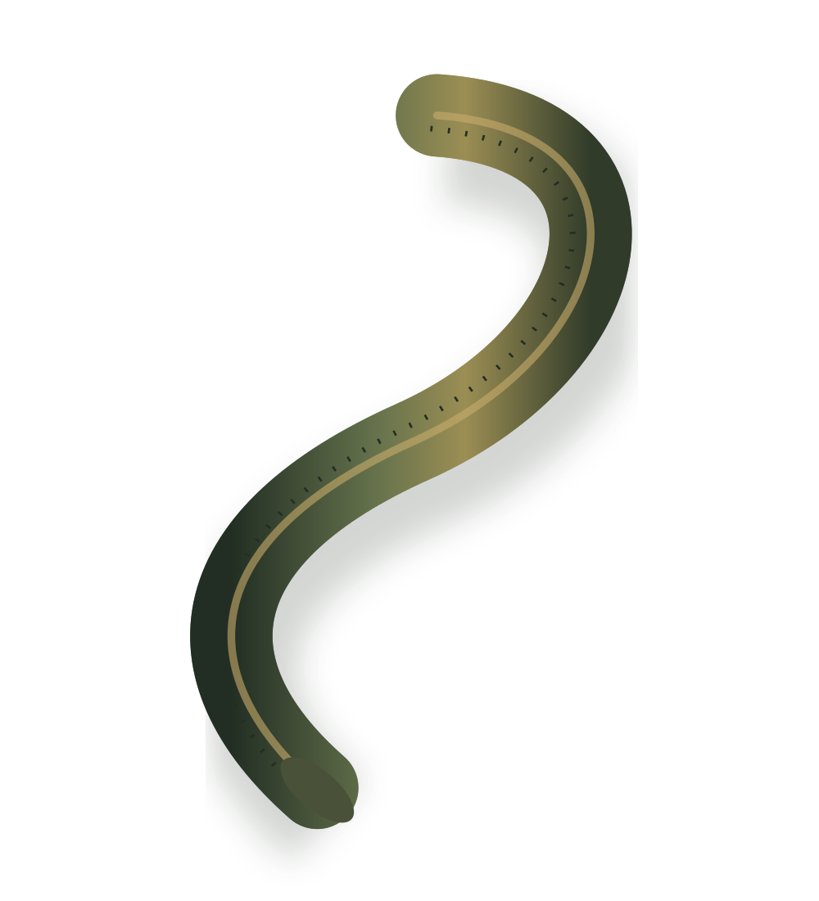

Знакомство и консультация
Обсудите цель обращения, состояние здоровья, лекарства и вопросы. Специалист оценит показания и противопоказания.

Город Баксан · Кабардино-Балкария (КБР)
Консультация и запись на гирудотерапию.
ЗаписатьсяГирудотерапия — процедура, при которой специалист использует специально выращенных медицинских пиявок. Они прикрепляются к коже; вещества в их слюне препятствуют свёртыванию крови.
У метода есть конкретные медицинские применения, в том числе при венозном застое после реконструктивных операций. Это не универсальное лечение: показания, возможную пользу и риски обсуждают с врачом.
Обсудите цель обращения, состояние здоровья, лекарства и вопросы. Специалист оценит показания и противопоказания.
Если процедура подходит, вам объяснят план, ощущения, риски и уход. Проведение — только после информированного согласия.
Специалист наблюдает за процедурой и даёт рекомендации по уходу. Необходимость повторного приёма обсуждается отдельно.
Возможны длительное кровотечение, инфекция и аллергическая реакция. Сообщите врачу о лекарствах и заболеваниях, особенно о нарушениях свёртывания крови. Самостоятельное применение пиявок небезопасно.
Информация о методе и рисках · NHSВыберите удобный день и оставьте контакты. Мы рассмотрим заявку и подтвердим приём.
Просто расскажите специалисту о своих заболеваниях, лекарствах, которые принимаете, и аллергии. Особенно важно сообщить о проблемах со свёртыванием крови или длительных кровотечениях. Готовить письменный список не нужно. Не отменяйте назначенные лекарства самостоятельно.
Нет. У процедуры есть риски и противопоказания. При нарушениях свёртывания крови, приёме антикоагулянтов и других состояниях особенно важна оценка врача. Не используйте её вместо назначенного лечения.
Специалист прикладывает медицинских пиявок к выбранному участку кожи и наблюдает за их прикреплением. После процедуры необходим уход за местом укуса: кровотечение может продолжаться некоторое время.
Да. После отправки заявки подключите Telegram по кнопке на сайте. В боте можно посмотреть статус, выбрать другое свободное время или отменить приём. После переноса понадобится повторное подтверждение.
Если вы подключили Telegram после отправки заявки, бот сообщит о подтверждении. Специалист также сможет связаться с вами по указанному телефону. До подтверждения заявка считается предварительной.